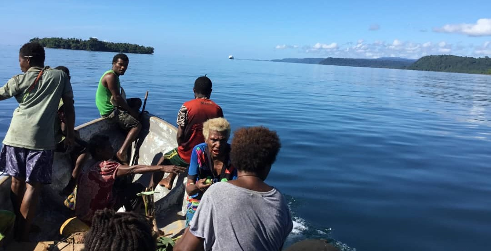

Journey to Tavolo
Flights, boat transfers and travel details for reaching this remote destination.
Get Transport DetailsGetting to Tavolo
Tavolo is a remote location requiring careful travel planning. Most international travelers fly via Tokenavada Airport (TMC) or Air Niugini services to reach Papua New Guinea, then fly regionally to reach our entry point.
Step 1: International Arrival in PNG
Most visitors enter Papua New Guinea through Port Moresby (Jackson's International Airport - POM) via flights from Australia, Philippines, or Southeast Asia. Air Niugini is the national carrier providing most international flights.
Major International Gateways:
- Port Moresby (POM): Main international hub with frequent connections to Australia, Asian capitals
- Connecting Airlines: Air Niugini, Virgin Australia, Qantas, AirAsia connections available
- Visa Requirements: Check current PNG visa requirements; most visitors need visa in advance or on arrival. Allow 2-3 hours for immigration processing.
Rest in Port Moresby 1-2 days if possible to adjust to tropical climate and time zones. Stay in a PNG accommodation familiar with international traveler needs.

Step 2: Regional Flight to East New Britain
From Port Moresby, you'll take a domestic flight to the East New Britain Province. Air Niugini operates regional services to Tokua Airport (TOK) near Rabaul or Hoskins Airport (HKN) on New Britain Island.

Regional Flight Options:
- Tokua Airport (TOK): Historically PNG's busier regional airport serving East New Britain. Discuss current service with our team.
- Hoskins Airport (HKN): Alternative regional airport on New Britain. Service availability varies.
- Flight Duration: Approximately 2.5-3.5 hours from Port Moresby
- Booking: We coordinate regional flights; contact us for current schedules and pricing
Regional flights often operate once daily. Delays due to weather are common in Papua New Guinea. Build flexibility into your itinerary.
Step 3: Boat Transfer to Tavolo
From the regional airport, you'll transfer by boat to Tavolo. This boat journey is part of the adventure - traveling along PNG's scenic coastline while experiencing the transition from civilization to pristine nature.
Boat Transfer Information:
- Duration: 2-4 hours depending on weather, sea conditions, and specific airport location
- Boat Type: Sturdy community boats designed for PNG waters, with safety equipment and experienced skippers
- Capacity: Small groups ensure personalized service and comfort
- Schedule: Coordinated with aircraft arrivals when possible; weather delays may occur
- Comfort Tips: Bring seasickness medication if prone, light jacket for ocean spray, secure any loose gear
The boat journey offers first views of Tavolo landscapes - islands, reefs, and wildlife. Arriving by boat connects you directly to the marine environment.

Planning Your Travel
Recommended Total Travel Time: Budget 2-3 days for the complete journey from your home to Tavolo, accounting for international flight times, connections, rest, and regional transfer.
Travel Preparation:
- Ensure passport valid 6+ months after return date
- Check visa requirements and apply if needed (typically 3-4 week processing)
- Arrange travel insurance covering remote travel and medical evacuation
- Book accommodations and activities in advance
- Notify your bank/credit card companies of travel dates
- Get recommended vaccinations (Yellow fever, Hepatitis A/B, Tetanus, Typhoid, Malaria prophylaxis)
Contact Us: We can coordinate all flights and transfers, provide current pricing, and answer specific travel questions.